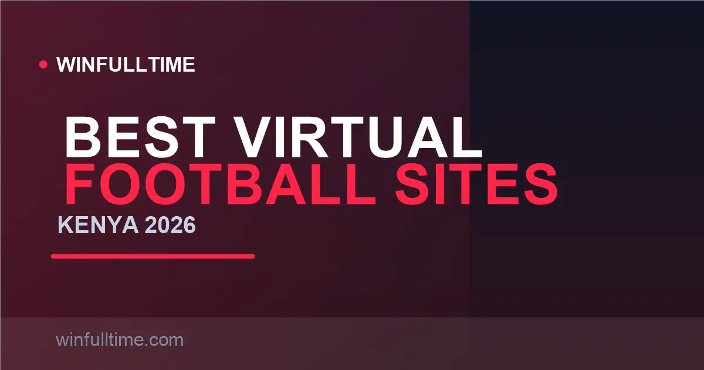

Best Virtual Football Betting Sites in Kenya 2026: Played in Minutes

No real kick-off, no waiting for Sunday — virtual football is the fastest money-in, money-out product in Kenyan betting, with a simulated match every 90 seconds on some sites. But the speed cuts both ways: these games are random-number-generator entertainment with a built-in house edge, not a shortcut to profit. Here are the five best virtual football platforms in Kenya for 2026 and how to play them without fooling yourself.

What Virtual Football Really Is
Virtual football is a computer simulation — a short, animated fixture decided by a certified random number generator (RNG). You bet on the same markets you know from real football (1X2, BTTS, over/under, correct score, handicaps) but the "players" are graphics and the result is pure random chance. Matches last one to five minutes and roll all day, so you never wait for a league calendar.
Kenya fell for it hard, and operators built entire product lines around the format: Betika's Jordan Premier League simulations, OdiBets' OdiLeague, virtual horse-racing and virtual greyhounds on every major site. The appeal is obvious — instant action, no research needed, low minimums. The danger is that virtual products are engineered to return less to players than real football, because the house margin is set by the game provider.
1. Betika Best Overall Virtuals
Betika owns Kenya's best-known virtual football brand. The Jordan Premier League sims give you a new match roughly every 90 seconds, with the full market set and odds that reflect the RNG house edge rather than team form. You also get virtual horse racing and basketball formats behind the same one-tap interface.
Stakes from about KES 10 make it dangerously frictionless — and that is exactly why Betika also carries extra safeguards, including deposit limits. If you want parameters, live cash-out on some virtual rounds and the fastest match cadence in the market, this is where to start.
Pros
- Most popular, most polished virtual product in Kenya
- Animated match report and stats after every round
- Deposit limits built in
- Works on the Betika app and USSD
Cons
- House edge is high by design
- Only one football sim provider
Verdict: The pick for players who want the trusted brand and the fastest polished virtual experience in Kenya.
2. 1xBet Widest Provider Choice
1xBet runs the deepest virtual lobby in Kenyan betting. Their virtuals are powered by eight separate studios — Leap, GlobalBet, NSoft, Kiron, DS Virtual, 1x2 Gaming, Virtual Generation and Betradar — each with its own football, racing, greyhounds, tennis and basketball simulations. If Betika plays one flavour of virtual football, 1xBet serves a whole buffet.
Rounds recycle every one to five minutes depending on the provider, minimum stakes start around KES 10 (Airtel Money deposits accepted from as little as KES 10), and some providers publish back the RTP % openly. That is a data advantage most rivals hide.
Pros
- Unmatched provider and market variety
- Virtuals from football to basketball to trotter racing
- Transparent RTP on some providers
Cons
- Under Curacao licence, not BCLB
- Site is dense; virtual tabs take learning
Verdict: For variety hunters who want every virtual game under one roof and the freedom to shop house edges.
3. 22Bet Rounds Every 2–4 Minutes
22Bet keeps virtual football simple and autocadence-friendly: a fresh match every two to four minutes, minimum stake of KES 10, and the full set of football markets on each round. The same engine also streams virtual racing and basketball between football fixtures.
For grinders, the mid-paced recycle is the sweet spot — slower than Betika's 90-second treadmill (which drains balance fast) and quicker than real football's dead hours. KES 100 deposits via M-Pesa make it a comfortable second account.
Pros
- Comfortable round cadence
- Full market set on every match
- Low KES 100 deposit entry
Cons
- Fewer providers than 1xBet
- Offshore Curacao licence
Verdict: The balanced pick — fast enough to matter, slow enough not to burn your bankroll in half an hour.
4. OdiBets OdiLeague Every ~35 Seconds
OdiBets' signature OdiLeague is the fastest virtual football in the market, with a new round roughly every 35 seconds. Coupled with KES 1 stakes and KES 1 deposits, it is the purest definition of instant-gratification betting in Kenya. It is also, frankly, a bankroll incinerator if you treat it as an income stream.
Play it for what it is: short entertainment bursts funded with money you are prepared to lose. The KES 30 no-wagering free bet on sign-up gives new players some free runway into the format before depositing a shilling.
Pros
- Fastest virtual football in Kenya
- Ultra-low KES 1 entry
- No-wagering free bet
Cons
- Speed multiplies the house edge losses
- Fewer markets than the major sims
Verdict: The budget-speed king. Enjoy it, but cap how many rounds you play per session before you open it.
5. MozzartBet Virtual Football + Virtual Jackpot
MozzartBet differentiates its virtual lobby with a virtual jackpot behind a KES 50 coupon, supplementing the standard virtual football and racing rounds run at a measured pace. For small stakers the jackpot is the draw: pick your virtual results, KES 50 entry, and the draw plays out in minutes rather than the multi-day wait of a real footie jackpot.
Elsewhere it is the BCLB-licensed, no-surprises MozzartBet experience — instant M-Pesa deposits from KES 20, decent market depth, and none of the friction of the offshore giants.
Pros
- Instant virtual jackpot draw
- Licensed local operator
- Low deposit entry
Cons
- Fewer distinct virtual sims than 1xBet
- Smaller virtual community
Verdict: Choose it when you want the jackpot angle on virtuals from a licensed, GRAK-sanctioned brand.
Virtual Football Sites Compared
| Operator | Round Speed | Min Stake | Football Sims | Extras | Licence |
|---|---|---|---|---|---|
| Betika | ~90 sec | KES 10 | Jordan League | Racing, basketball, cash-out | GRAK (BCLB) |
| 1xBet | 1–5 min | KES 10 | 8 providers | Racing, greyhounds, tennis, basketball | Curacao |
| 22Bet | 2–4 min | KES 10 | Multiple | Racing, basketball | Curacao |
| OdiBets | ~35 sec | KES 1 | OdiLeague | SMS betting, free KES 30 | GRAK (BCLB) |
| MozzartBet | ~2–5 min | ~KES 20–50 | Standard | Virtual jackpot (KES 50) | GRAK (BCLB) |
The RNG Truth: Why Nothing Here Is Predictable
Every virtual result is produced by a random number generator certified by independent testing labs. That carries one brutal implication: there is no skill, no pattern, and no tell you can read from the animation. Each match is a fresh, independent roll. Any "virtual football strategy" promising guaranteed wins sells folklore.
The honest way to play: accept virtuals as entertainment that returns roughly 90–95% of stakes long-term, set a firm session cap, and never chase a losing round with doubled stakes on the next match — each round resets the same house edge. Real football at least rewards study; virtuals reward nothing but their provider's margin.
Smart Virtual Football Tips
Tip 1: Stake the minimum, not the emotion
The house edge re-applies on every single round. Keeping stakes at the minimum (KES 1 to KES 10) turns virtuals into cheap entertainment; doubling stakes after a loss turns them into a fast bleed. Never martingale virtual rounds.
Tip 2: Pick slower sims for your bankroll
OdiLeague restarts every 35 seconds; Betika every 90 seconds. At equal odds and stake, the 35-second game drains your balance roughly 2.5x faster. If you value staying in the game, favour the slower providers on 1xBet or 22Bet.
Tip 3: Use promotions, not deposits
Test a provider first with free money: OdiBets' KES 30 no-wagering free bet, betPawa's free coupons, and Betika's regular virtual free spins all give risk-free runway before any real-money round.
Tip 4: Remember the twin excises
Every stake carries the built-in 20% excise duty, and cashing out triggers the 5% withdrawal excise. On a low-edge simulation that compounds in the house's favour — another reason to treat virtuals as fun, capped and small.
Frequently Asked Questions
What is virtual football betting?
Virtual football is a computer-simulated football match, usually around 1–5 minutes long, shown as 3D animation. You bet on the outcome exactly like real football — match result, both teams to score, over/under goals — but the result is decided by a certified random number generator, not real players.
Is virtual football rigged or predictable?
No. Licensed providers use certified random number generators (RNGs) certificated by testing labs, with each outcome independently random. That means no pattern to exploit and no way to predict a result from what you watch — any "guaranteed virtual football strategy" you see online is folklore.
How long does a virtual football match last?
Each simulated match runs from about 1 to 5 minutes. Betika's fastest sims kick off roughly every 90 seconds, OdiBets' OdiLeague restarts about every 35 seconds, and 1xBet offers multiple providers with rounds between 1 and 5 minutes.
What are the minimum stakes for virtual football in Kenya?
Minimum stakes are typically from KES 10 at 1xBet, 22Bet and Betika, rising with the provider. High-volatility games like virtual horse racing and virtual greyhounds often allow even smaller entry, sometimes from KES 1.
Can you win real money on virtual football in Kenya?
Yes — winnings land in your betting account and are withdrawn to M-Pesa exactly like real football winnings, minus the 20% excise built into stakes and the 5% withdrawal excise. But remember the odds are built for the house: treat virtuals as entertainment value, not a wage.
Prefer Real Football With a Real Edge?
Our predictions team covers real leagues daily — value picks, in-play alerts and ticket combinations built on actual data, not random-number sims.
Last updated: 30 August 2026 | By Tochukwu Mesigo |
Build Winning Accumulator Tickets
Generate optimized accumulator combinations from today's data-driven predictions. Set your target odds and get instant ticket suggestions.
Pro Ticket Builder →